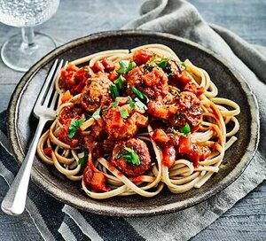

Slow cooker meatballs

Back to recipes
Description:
Try these slow cooker meatballs for a tasty family meal. Turkey mince
makes lighter meatballs which kids love. They also freeze well so you can
batch cook.
Ingredients:
- 1 tbsp rapeseed oil
- 1 onion, finely chopped
- 2 carrots, finely diced
- 2 celery sticks, finely diced
- 2 garlic cloves, thinly sliced
- 500g carton tomato passata
- 2 tbsp chopped parsley
For the meatballs
- 400g lean mince turkey
- 4 tbsp porridge oats
- pinch paprika
- 1 garlic clove, crushed
- spray of oil
Steps:
-
Heat the slow cooker if necessary. Heat the oil in a non-stick frying
pan and add the onion, carrots, celery and garlic and fry gently for a
minute. Pour in the passata, add the parsley and stir, then transfer the
lot to the slow cooker.
-
To make the meatballs, tip the mince into a large bowl. Add the oats,
paprika, garlic and plenty of black pepper, and mix everything together
with your hands. Divide the mixture into 20 lumps about the size of a
walnut and roll each piece into a meatball. Spray or run a non-stick pan
with a little oil and gently cook the meatballs until they start to
brown. Add them to the tomato base and cook on Low for 5 hours. Serve
over rice or pasta if you like, or with a green salad.
BBC goodfood